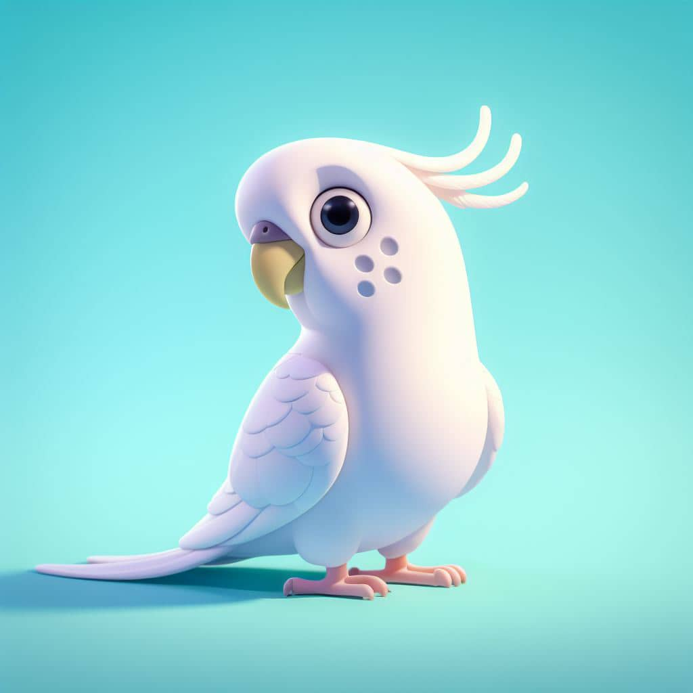
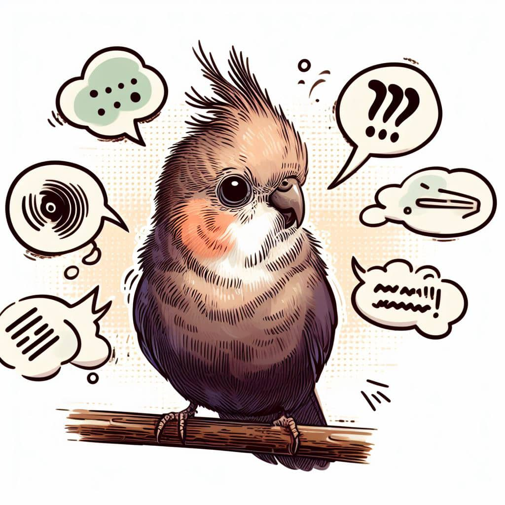
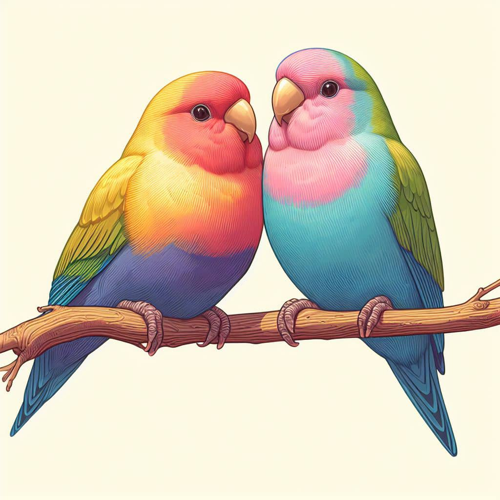
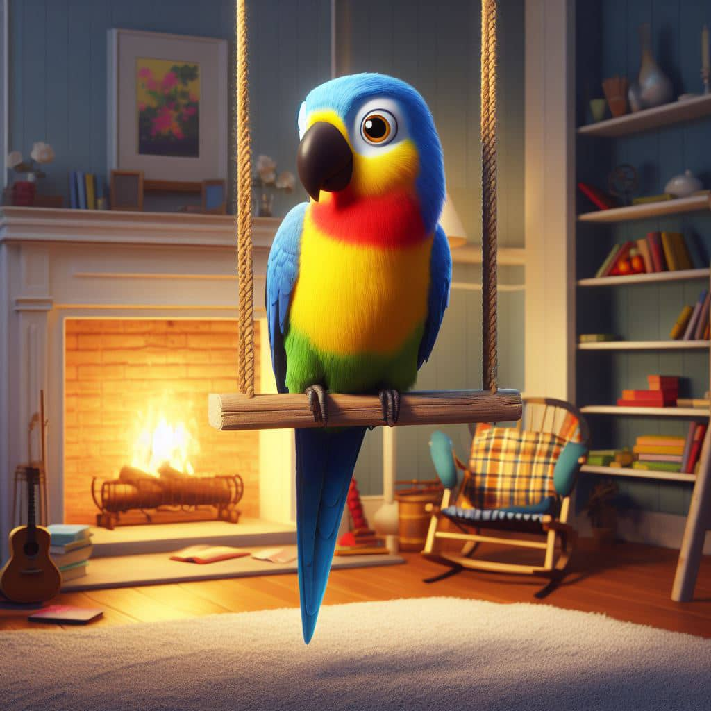

Loros
Los loros son aves de la familia de los psitaciformes,
originarias de algunas partes de América del Sur y Central
principalmente, con un característico pico de forma curvada,
generalmente coloridas, que poseen una gran capacidad craneal,
siendo una de las aves más inteligentes. Son animales domésticos
muy populares debido a su gran adaptabilidad y fácil cuidado.

Estos son capaces de imitar la voz humana y otros sonidos,
lo que los hace muy atractivos como mascotas. En cuanto a sus
características, su pico es muy característico al estar curvado,
con la mandíbula inferior con movilidad y una buena capacidad
craneal, lo que les hace ser una de las aves más inteligentes.
Son buenas voladoras y escaladoras de ramas y árboles.

En cuanto a su comportamiento, los loros son aves gregarias,
que tienden a formar parejas monógamas y con gran capacidad de
aprendizaje, comprensión espacial y solución de problemas. Algunas
especies son capaces de imitar sonidos, incluso palabras humanas.
Con respecto a las especies, existen loros con diversidad de colores
alternativos como el rojo, el azul o el amarillo.
En la actualidad, existen zoológicos con aviarios enormes donde
resguardan las especies de todo el mundo con más cuidado,
proporcionándoles la comida de permanecer como estuvieran en su
país o zona natal. A pesar de no tener capacidad para comprender
lo que repiten, si poseen la cualidad de repetir con las mismas
tonadas, acentos y melodías que se les enseñe.
Cuidados para un loro

Los loros son animales que requieren de ciertos cuidados para
mantenerse saludables y felices. A continuación se mostrarán algunos de estos:
- Espacio: Es importante que el loro tenga suficiente
espacio para moverse y estirar sus alas. La jaula debe ser lo
suficientemente grande para que el loro pueda aletear y comer
sin problemas.

- Alimentación: La alimentación es clave para la salud física
y emocional del loro. Es importante proporcionarle una dieta
equilibrada y variada que responda a las necesidades de su especie en particular.
Además, es fundamental controlar el consumo de frutos secos que son sumamente ricos en calorías.
- Juguetes: Los loros necesitan diversión para pasar las horas.
Es importante proporcionarles juguetes de diferentes texturas y
materiales para que puedan trabajar su pico y liberar energía.
- Higiene: Los loros son animales muy limpios, pero al mismo
tiempo vulnerables a los parásitos tanto internos como externos.
Es importante limpiar la jaula y todos los elementos que hay en
ella al menos dos veces por semana.
- Salud: Es importante prestar atención a la salud del loro,
incluyendo signos de enfermedades como plumaje desaliñado, pérdida
de apetito o cambios en su comportamiento. Es fundamental llevar
al loro al veterinario de manera regular.
Consejos para el cuidado de un loro
Estos son algunos consejos que puedes seguir para mejorar la
experiencia de tu mascota emplumada:
- Proporciona una dieta variada y equilibrada:
Además de frutas, verduras y pienso, puedes incluir en su dieta
arroz, queso fresco, pasta o huevo de forma ocasional.
- Una fuente de luz natural o artificial: Los loros necesitan
luz solar natural o una lámpara de espectro completo para ayudar con
la producción de vitamina D.
- Un ambiente tranquilo: Los loros son sensibles al ruido
y a los olores fuertes, por lo que es importante colocar su jaula
en un lugar tranquilo y alejado de la cocina y otros lugares ruidosos.
- Atención y tiempo de calidad: Los loros son animales sociales
y necesitan tiempo de calidad con sus dueños. Dedica tiempo a jugar
con tu loro y a socializar con él.
- Ambiente seguro: Asegúrate de que el área circundante
esté limpia y segura para prevenir enfermedades y problemas
de salud. También es importante asegurarse de que la jaula esté
segura y libre de peligros.
- Ambiente cómodo: Mantén la temperatura constante entre los
18 y los 30 °C para que tu loro se sienta cómodo. Además,
asegúrate de que la jaula tenga suficiente espacio para que tu
loro pueda moverse y estirar sus alas cómodamente.
- Ambiente estimulante: Proporciona juguetes y actividades
para que tu loro se mantenga entretenido y estimulado mentalmente.
Además, enséñale trucos y háblale para estimular su inteligencia.
- Proporciona atención veterinaria regular: Lleva a tu loro
al veterinario regularmente para asegurarte de que esté sano y
para prevenir enfermedades.
- Otórgales un ambiente libre de humo: Los loros son muy
sensibles al humo del tabaco y otros humos tóxicos, por lo
que es importante mantenerlos alejados de estas sustancias.
- Proporciona un ambiente libre de sustancias tóxicas:
Asegúrate de que tu loro no tenga acceso a sustancias tóxicas
como productos de limpieza, plantas venenosas o alimentos peligrosos.